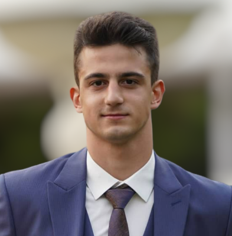
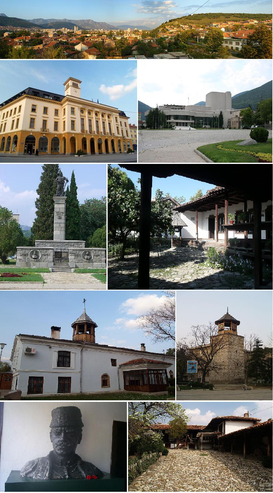
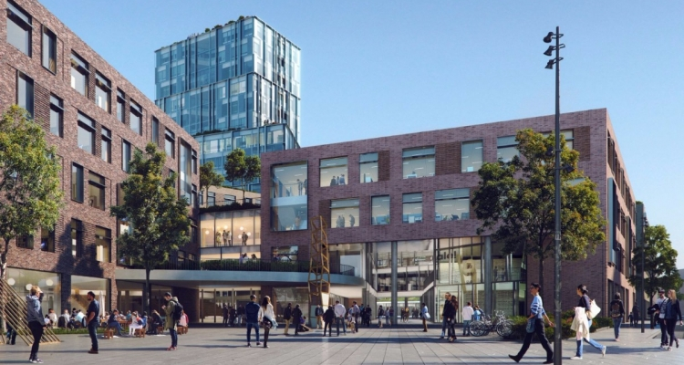

Dimitar TerzievAge: 21 Email: 316133@via.dk |
 |
Work/Study ExperienceVIA University CollegeBachelor's student in Global Business Engineering | 2021 - Present
|
HometownWebsite:Sliven Sliven (Bulgarian: Сливен) is the eighth-largest city in Bulgaria and the administrative and industrial centre of Sliven Province and municipality in Northern Thrace. Sliven is famous for its heroic Haiduts who fought against the Ottoman Turks in the 19th century and is known as the "City of the 100 Voyvodi", a Voyvoda being a leader of Haiduts. The famous rocky massif Sinite Kamani (Сините камъни, "The Blue Rocks") and the associated national park, the fresh air and the mineral springs offer diverse opportunities for leisure and tourism. Investors are exploring the opportunity to use the famous local wind (Bora) for the production of electricity. Another point of interest and a major symbol of the city as featured on the coat of arms, is the more than thousand-year-old Stariyat Briast (Старият Бряст, "The Old Elm"), a huge Smooth-leaved Elm in the center of the city. During Ottoman rule, Turkish officials used to hang Bulgarian revolutionaries on it. |
 |
VIAWebsite:VIA University College The nameVIA is not an abbreviation. It's Latin meaning is “by way of”. We see VIA as a station on life’s journey, where students learn and grow before travelling on as professionals ready to contribute to society and make a difference. Traditions and internationalisationOur programmes build on strong Danish traditions for educating students in cooperation with professional practice. Some programmes, like teaching, nursing and social education go back more than 100 years. They still play an important role in developing the world known Danish welfare society and creating growth and innovation in private industries. As the world becomes more global, VIA increasingly takes an international approach to education and research. Today, almost half of our programmes are taught in English and we offer international double degrees, student and staff exchange, summer schools and research projects. |
 |
Reasons why VIA was the perfect choice for me:
|